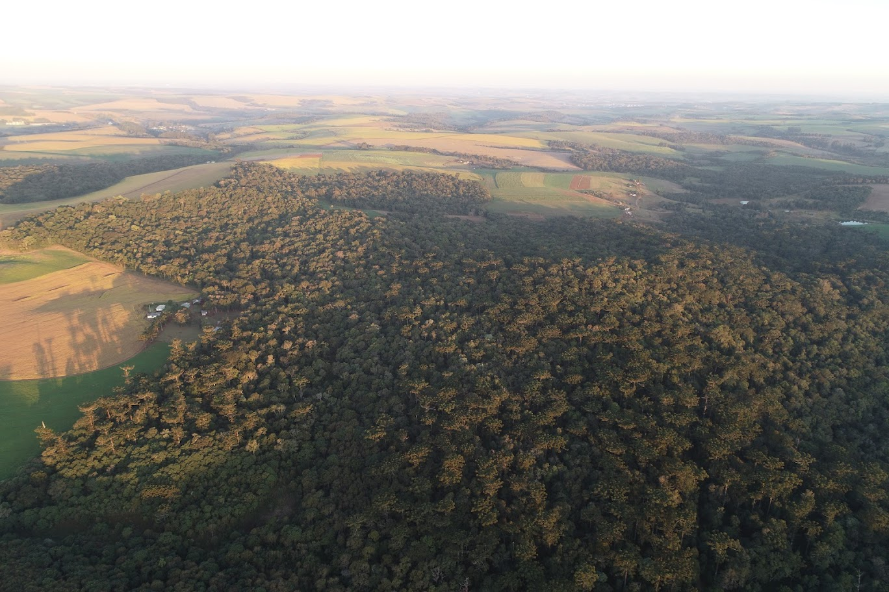
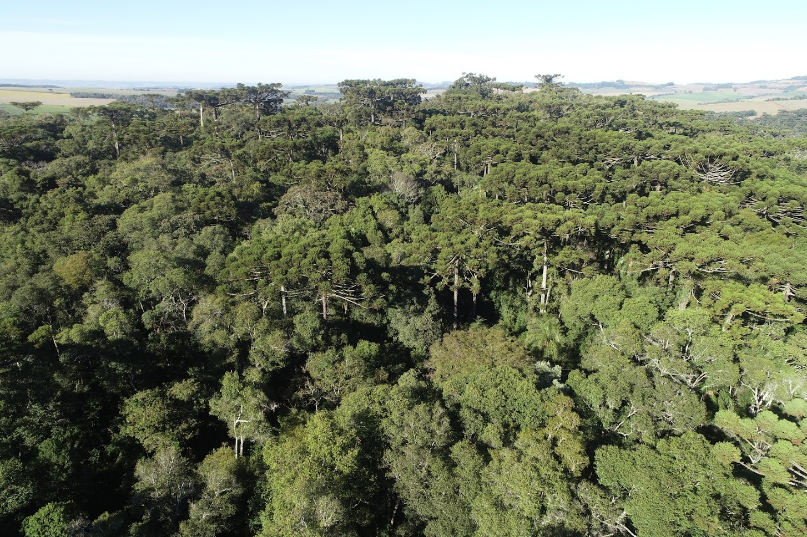
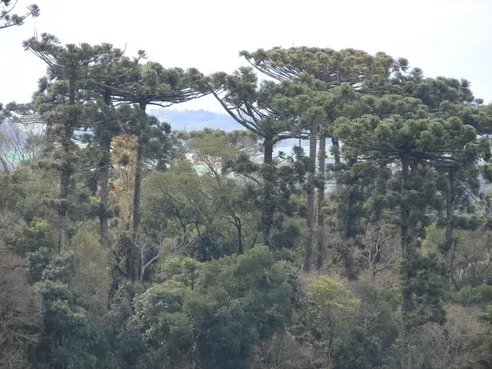

Parque Estadual
Um dos últimos grandes remanescentes da Floresta com Araucárias no oeste de SC.
Criado em 2003, o parque protege um remanescente significativo da Floresta com Araucárias em uma região historicamente marcada pela expansão agrícola.
Sua paisagem reúne araucárias centenárias, imbuias, cedros e xaxins, além de campos naturais com orquídeas e bromélias.
Abriga o papagaio-charão, o macuco, a jaguatirica e espécies aquáticas dependentes dos rios e nascentes preservados.


Mensagens enviadas pelos visitantes sobre este parque (armazenadas neste navegador).
Nenhuma comunicação registrada ainda. Seja o primeiro a enviar →